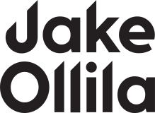
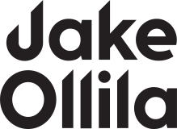

Hi, my name is
 

I'm a Software Engineer based out of Boston, MA.
I have a passion for coding and creating innovative solutions.
As a personal project I made a website that allows fly fishermen to share their fly patterns, and discover new patterns shared by other users.

I built the website for a company that provides statistically-based predictions for NFL football betting odds. Check out Nick Shorestein's weekly newsletter before placing bets against the spread!
As a personal project, I built a web app that collects data from several different social media sites and aggregates them into a single feed.

Responsibilities & Achievements:
Responsibilities & Achievements:
Responsibilities & Achievements: